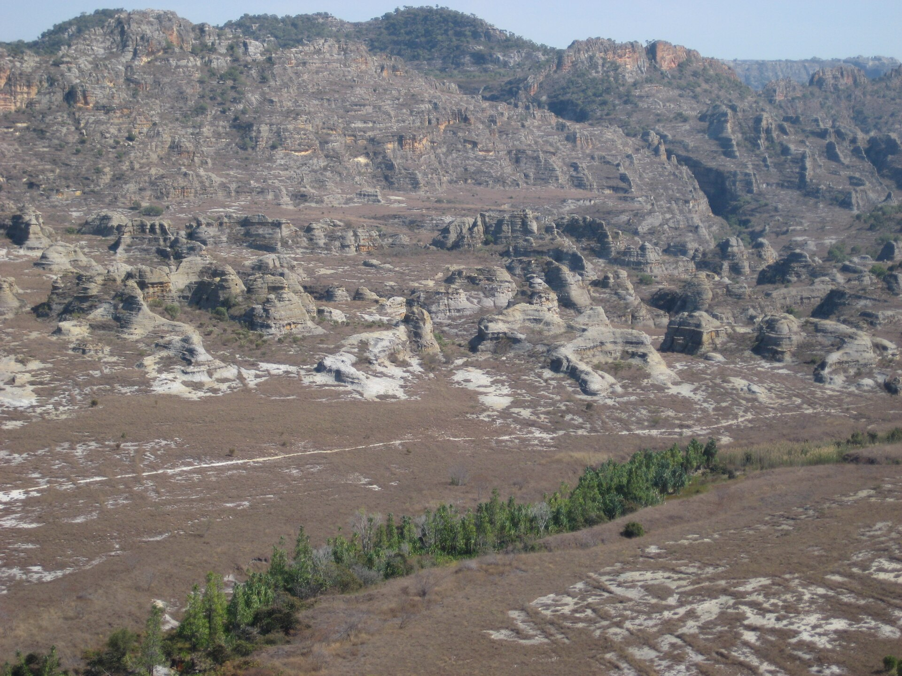

🏜️ Isalo
Découvrez les paysages spectaculaires, les canyons et les formations rocheuses du Parc National de l'Isalo.
🏜️ À propos de l'Isalo
Le Parc National de l'Isalo est l'une des destinations naturelles les plus remarquables de Madagascar.
Ses paysages sont caractérisés par des formations rocheuses, des vallées, des canyons et une végétation unique.
🥾 Activités
🥾 Randonnée
Parcourez les sentiers et découvrez les magnifiques paysages de l'Isalo.
🏜️ Canyons
Explorez les canyons et les formations rocheuses naturelles.
🌿 Nature
Découvrez la faune et la flore caractéristiques de la région.
📸 Photographie
Profitez des paysages pour réaliser de magnifiques photographies.
📸 Galerie Isalo
📍 Localisation
Le Parc National de l'Isalo se situe dans le sud-ouest de Madagascar.
📅 Visiter l'Isalo
Vous souhaitez organiser une visite de l'Isalo ?
📅 Réserver 💬 WhatsApp